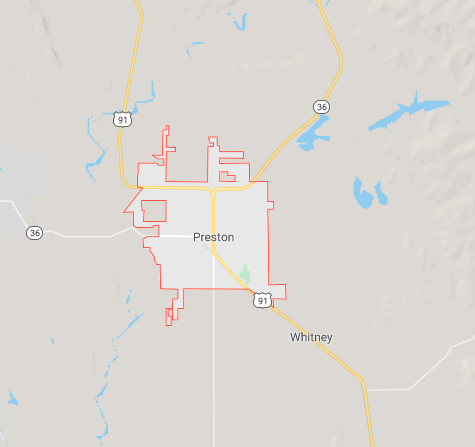

Preston Idaho

| Weather Summary | |
|---|---|
| Currently : | |
| High : | |
| Wind Speed: | |
| Wind Chill : | |
| Humidity : | |
5 Day Forecast
Be prepared to stay safe and healthy in winter
Written by CDC :Centers for Disease Control and Prevention
Winter storms and cold temperatures can be dangerous. Stay safe and healthly by planning ahead. Prepare your home and cars. Prepare for power outages and outdoor activies.
Take These Steps for Your Home:
Many people prefer to remain indoors during winter, but staying inside is no guarantee of safety. Take these steps to keep your home safe and warm during the winter months.
- Winterize your home.
- Install weather stripping, insulation, and storm windows.
- Insulate water lines that run along exterior walls.
- Clean out gutters and repair roof leaks.
- Check your heating systems.
- Have your heating system serviced professionally to make sure that it is clean, working properly, and ventilated to the outside.
- Inspect and clean fireplaces and chimneys.
- Install a smoke detector. Test batteries monthly and replace them twice a year.
- Have a safe alternate heating source and alternate fuels available.
- Prevent carbon monoxide (CO) emergencies. continue to read full article...



Contact Details
📌30N 20E
📪Preston, ID 83263
📞+999-999-9999
💌 info@weatherguru.com